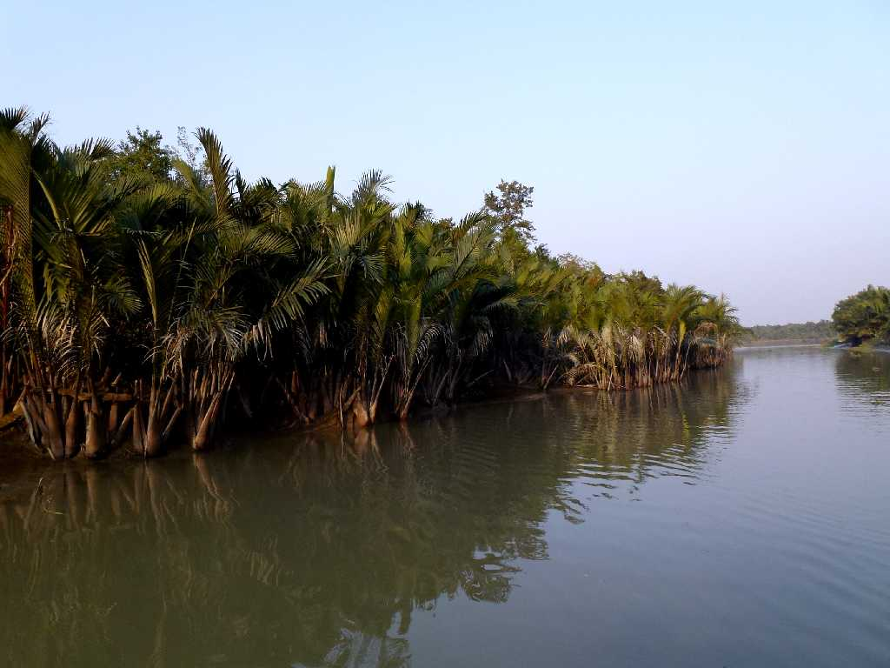
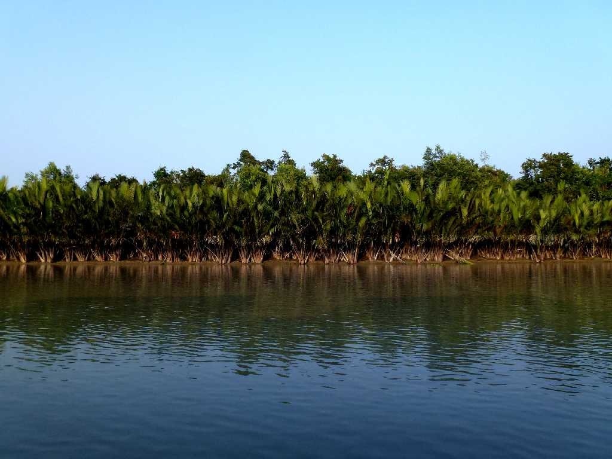
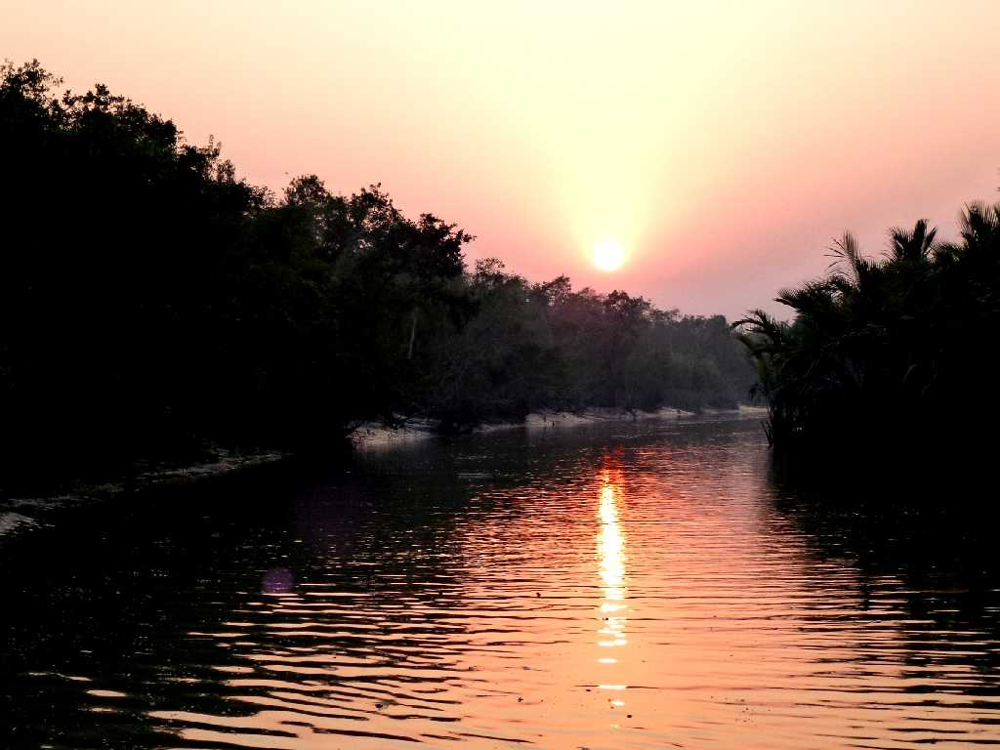
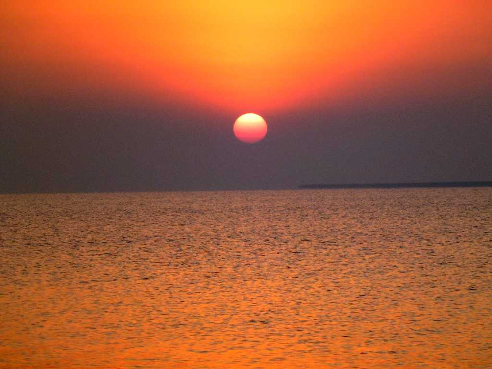
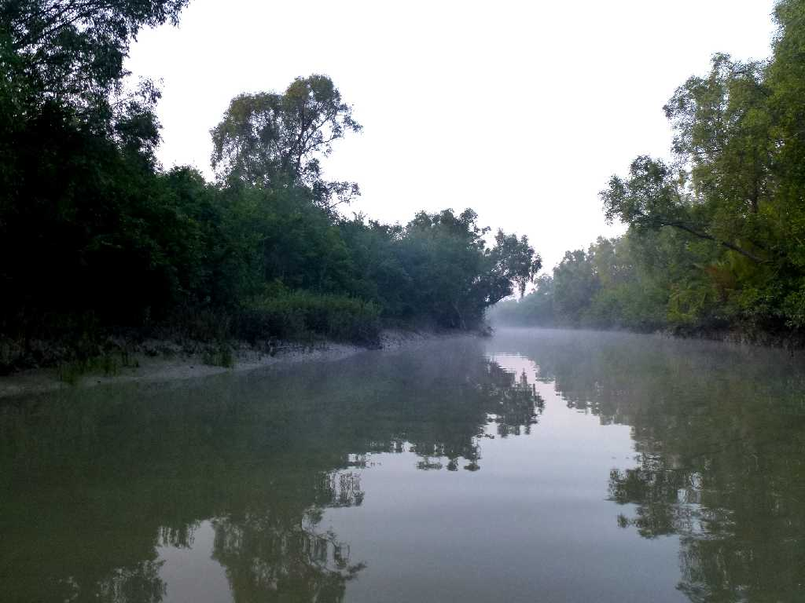
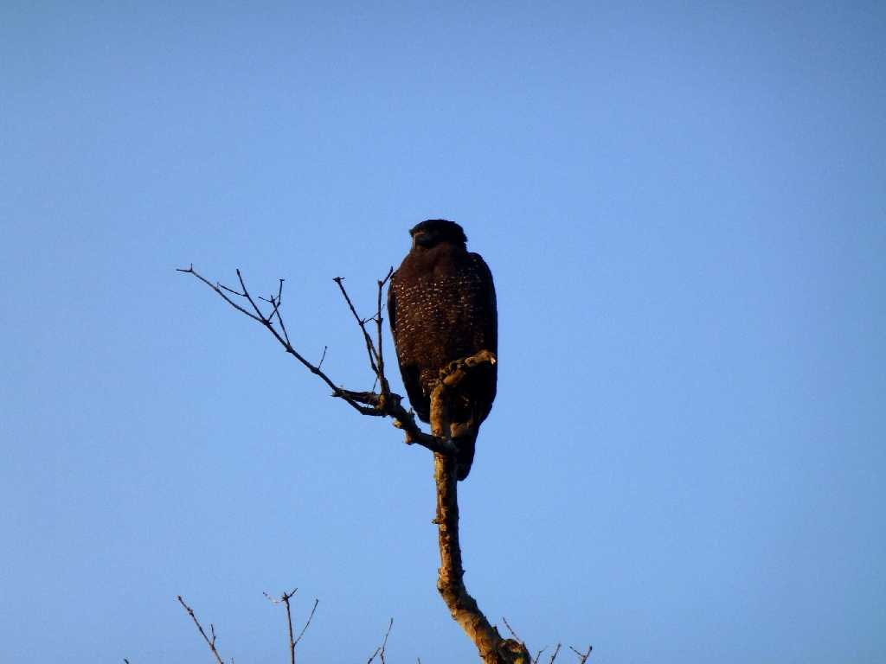
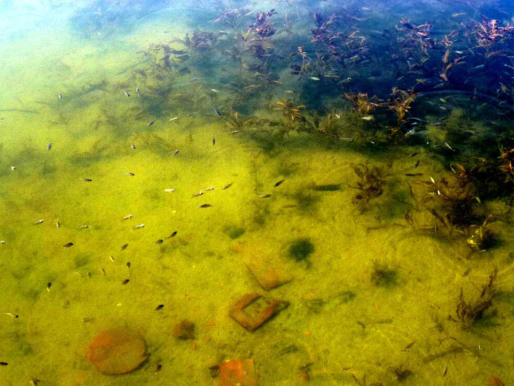

Mangrove Forest Kachikhali Sundarban National Park
ガンジス川がベンガル湾に流れ出る約８万平方キロメートルある世界最大のデルタ地帯

Mangrove Forest Kachikhali Sundarban National Park
Sunset Mangrove Forest Kachikhali Sundarban National Park
シュンダルバン国立公園は約１万平方キロメートルある世界最大のマングローブの森
December 15 2013 Mangrove Forest Kachikhali Sundarban National Park

December 15 2013 17:00 Sunset Mangrove Forest Kachikhali Sundarban National Park

December 16 2013 6:38 Sunrise Mangrove Forest Kachikhali Sundarban National Park
ベンガル湾の日の出

Morning Mangrove Forest Kachikhali Sundarban National Park

Bird Mangrove Forest Kachikhali Sundarban National Park

Fish Mangrove Forest Kachikhali Sundarban National Park